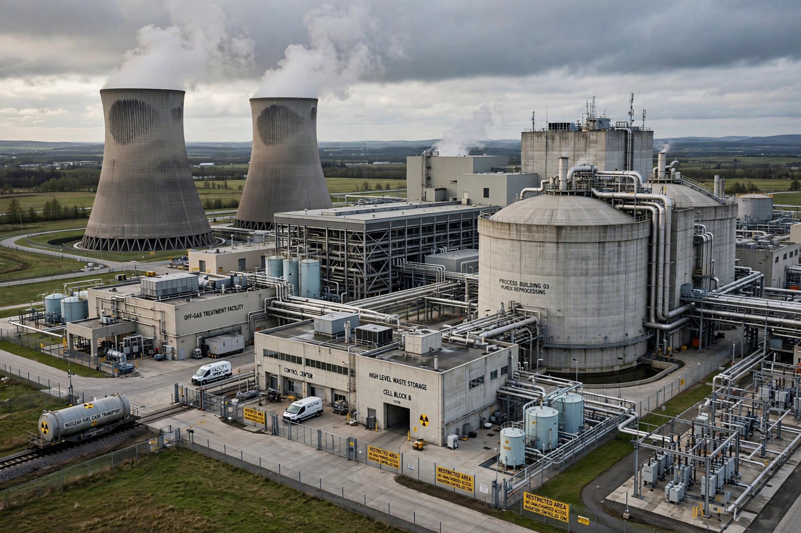

Nuclear reprocessing is the chemical separation of fission products and actinides from spent nuclear fuel. Originally developed to produce plutonium for nuclear weapons, commercial reprocessing recovers unused uranium and plutonium from power-reactor fuel for reuse, for example as MOX fuel.
The dominant industrial process is PUREX (plutonium uranium reduction extraction), which dissolves fuel in nitric acid and separates uranium and plutonium using tributyl phosphate solvent extraction. The remaining high-level liquid waste is typically vitrified into glass for disposal.
Major plants include La Hague (France), Sellafield (United Kingdom, now ended), Mayak (Russia) and Rokkasho (Japan). The United States abandoned commercial reprocessing in the 1970s over proliferation concerns. Reprocessing remains controversial because separated plutonium is weapons-usable, while its economics versus direct geological disposal are debated.